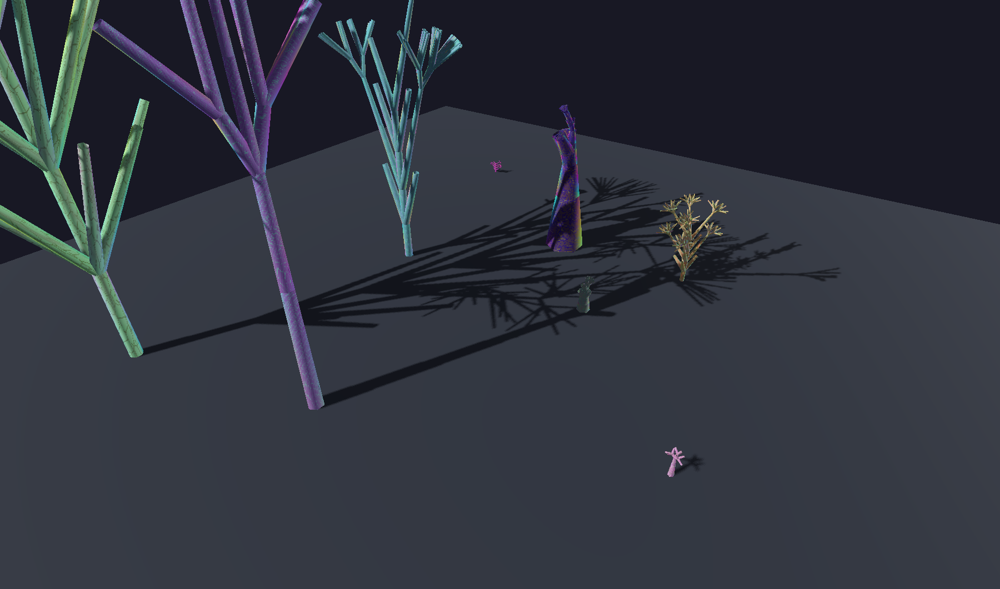
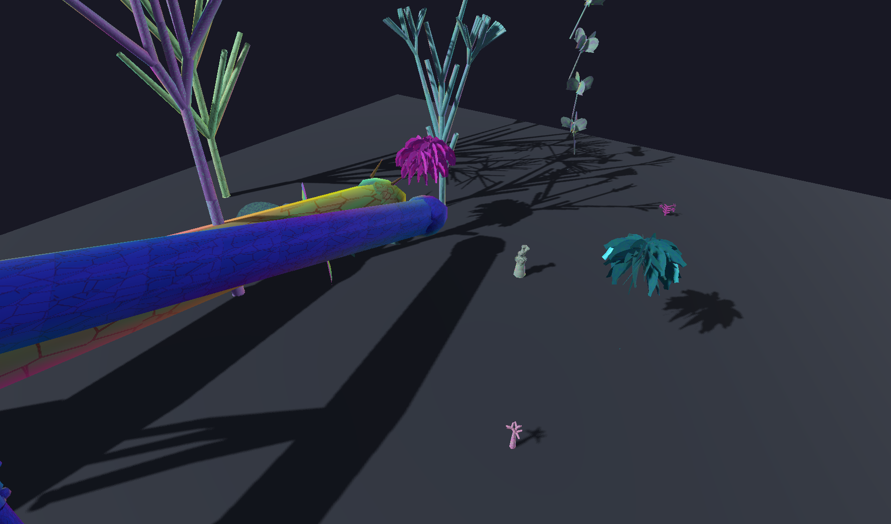
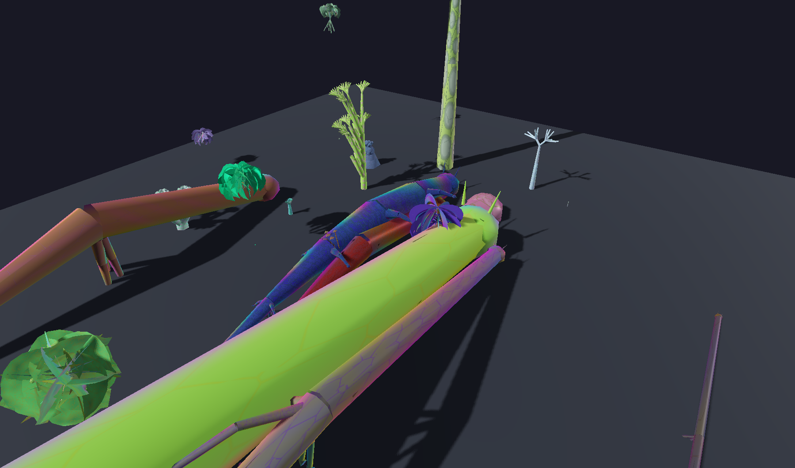

The ecosystem trajectory: 19 stages, 8 integration steps, and the endgame where the walls fall away
Ada Research tells its story through emergence. The player starts in a sterile Lab with grey cubes and flat floors. Over 19 sequences covering 275+ maps, that Lab fills with color, grows fractal ferns, breeds creatures that shift from hostile to companion, and finally dissolves into an open landscape where the QFEP formula floats in space. That's the design. And now it's built.
The ecosystem runs on a triad of singleton managers that all listen to the same event: sequence_completed. When a player finishes all maps in a curriculum sequence, MapProgressionManager fires this signal, and three systems advance in parallel.
The control plane is solid. All three managers correctly rebuild cumulative state from completed sequences, persist to disk, emit signals, and expose query APIs. All eight consumer systems are wired: ambient audio crossfades through 10 stage-specific presets, creature AI responds to personality state (foe/wary/neutral/curious/friend), the nature system spawns flora based on density and allowed kingdoms, terrain switches between four procedural modes, movement abilities gate behind progression, and the endgame landscape generates from full ecosystem state. The skeleton has muscle, skin, and a heartbeat.
Each curriculum sequence maps to an ecosystem stage. The progression tracks six parallel threads: terrain, vegetation, kingdoms, ambient audio, creature relationships, and player capabilities.
Sterile lab. Flat terrain. Grey palette fading to color. Player observes and touches. Hazards exist but stay dormant. First flowers appear at stage 3 when color unlocks. Trees join at stage 4.
Terrain: flat · Density: 0.0 to 0.2 · Capacity: L1-L3 (Observe to Manipulate)
Everything oscillates. Sine waves as the breath between order and entropy. Hazards chase now. Creatures appear at the periphery.
Terrain: flat · Density: 0.25 · Capacity: L3 (oscillate, tune_frequency)
The ground breaks. Flat terrain transforms to noise-sculpted landscape, then to growth-mode cellular surfaces. Fungus kingdom arrives. Ecology emerges. Spawners become aggressive. Player learns to climb.
Terrain: flat → noise → growth · Density: 0.3 to 0.5 · Capacity: L4 (Construct)
Self-similar branching at every scale. L-system trees grow through corridors. The world generates itself. Creature kingdom unlocks. Terrain becomes self-generating. The player reaches L5 Control.
Terrain: growth → self_generating · Density: 0.6 to 0.8 · Capacity: L5 (Control)
Living matter deforms underfoot. Flocks swirl. The miura_crawler becomes the first creature to shift from foe to friend. The player embodies swarm logic, gains flight. Vegetation nearly complete.
Terrain: self_generating · Density: 0.85 to 0.95 · Capacity: L6 (Embody + Flight)
Formal systems break. Godel proves completeness impossible. The QFEP formula emerges as a lens, not an answer. Post-crisis applies limits to real concerns. Graph theory connects everything. ALL remaining hazards become friends. The world is fully alive. Density 1.0.
Terrain: self_generating · Density: 1.0 · Capacity: L6 (full parameter control)
The terrain system now implements four procedural modes that activate as the player progresses. Each mode adds visual complexity and transforms the spatial experience of the Lab.



Each mode uses SurfaceTool to build custom meshes with height-based vertex coloring. The transition between modes is driven by EcosystemManager.terrain_mode_changed — when the signal fires, the terrain regenerates in-place.
Every hazard creature follows a personality trajectory from hostile to companion. This is one of the most narratively powerful systems in Ada Research, and it's entirely data-driven. Here are five representative arcs:
By stage 19 (Graph Theory), every creature in the world is a friend. The hostile environment has become a living community. This is the game's thesis made behavioral: understanding transforms threat into companionship.
ambient_preset_changed, SoundBank crossfades automatically. 66 total presets in the manifest.
movement_ability_unlocked signals for real-time unlock during play.
landscape.tscn inheriting base.tscn. 60m procedural terrain (self_generating mode), 60 creatures across all four kingdoms, QFEP formula floating at 3x scale above the center. Teleporter t:landscape at the far corridor of the post-graphtheory lab. Return portal archway at the spawn edge. Atmospheric fog, procedural sunset sky, warm sunlight. Player spawns at terrain edge facing inward with flight unlocked.
All 8 steps complete. The ecosystem integration is finished.
From order, through entropy, at the edge of chaos, the world that emerges is both hostile and promising. That's not just the formula. That's the game.
The ecosystem shouldn't be invisible machinery. It should be the thing the player notices without being told. Here's the designed sensory arc:
Bare Lab. Grey surfaces. Static geometry. The only living thing is a dormant miura_crawler in the corner, folded like origami. The ambient is empty. The floor is a perfect plane.
Flowers appear on flat surfaces. Color bleeds into the world. A creature watches from a distance but retreats when approached. The ambient hums with undertones.
Mushrooms grow on walls. The floor undulates with Perlin noise. Creatures chase. The Lab feels alive and slightly dangerous. Seeds sprout from cellular automata rules. The ambient crackles with environmental entropy.
Fractal ferns cover every surface. L-system trees branch through corridors and crack through walls. The terrain generates itself while you watch. New creatures emerge from the geometry. The ambient is recursive, self-similar.
Soft matter deforms underfoot. Flocks of creatures swirl through rooms. The miura_crawler follows the player like a companion. You can fly. The ambient is collective, breathing, adaptive.
Paradox terrain folds in on itself. The Lab walls thin. Every creature is a friend. The QFEP formula floats in the air, tangible, interactive. A door opens. Outside: the world you built, fully grown, both hostile and promising. The horizon is open.
The endgame isn't a reward. It's proof that the formula works. From order (F), through entropy (E), at the edge of chaos (λ), the world that emerges (φ · ΔE) is the game's thesis made physical. You don't just learn the QFEP formula. You live inside it, and then you walk out of it into the world it generated.
Ada Research · Ecosystem Trajectory Rapport · March 2026
Full technical rapport: docs/design/ECOSYSTEM_TRAJECTORY_RAPPORT.md